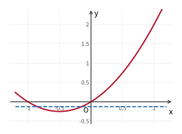
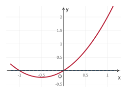
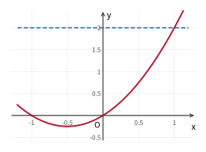

ホーム ＞ 数学II ＞ 三角関数の方程式・不等式・最大最小
別冊練習問題 9 の解答 置き換えと解の個数（グラフ利用）
(1) \(0\leqq\theta<2\pi\) のとき、方程式 \(\sin^2\theta+\sin\theta=- \dfrac{1}{8}\) をみたす \(\theta\) は何個あるか。
置き換え
\(\sin\theta=t\ (-1\leqq t\leqq1)\)、\(g(t)=t^2+t=\left(t+\dfrac12\right)^2-\dfrac14\)。
グラフ
\(y=g(t)\) と \(y=- \dfrac{1}{8}\) の共有点の \(t\) の個数と、各 \(t\) に対する \(\theta\) の個数（\(-1<t<1\) は2個、\(t=\pm1\) は1個）を数える。

個数
\(k=- \dfrac{1}{8}\) のとき \(4\) 個。
【答案】
\[4\]答
(2) \(0\leqq\theta<2\pi\) のとき、方程式 \(\sin^2\theta+\sin\theta=0\) をみたす \(\theta\) は何個あるか。
置き換え
\(\sin\theta=t\ (-1\leqq t\leqq1)\)、\(g(t)=t^2+t=\left(t+\dfrac12\right)^2-\dfrac14\)。
グラフ
\(y=g(t)\) と \(y=0\) の共有点の \(t\) の個数と、各 \(t\) に対する \(\theta\) の個数（\(-1<t<1\) は2個、\(t=\pm1\) は1個）を数える。

個数
\(k=0\) のとき \(3\) 個。
【答案】
\[3\]答
(3) \(0\leqq\theta<2\pi\) のとき、方程式 \(\sin^2\theta+\sin\theta=2\) をみたす \(\theta\) は何個あるか。
置き換え
\(\sin\theta=t\ (-1\leqq t\leqq1)\)、\(g(t)=t^2+t=\left(t+\dfrac12\right)^2-\dfrac14\)。
グラフ
\(y=g(t)\) と \(y=2\) の共有点の \(t\) の個数と、各 \(t\) に対する \(\theta\) の個数（\(-1<t<1\) は2個、\(t=\pm1\) は1個）を数える。

個数
\(k=2\) のとき \(1\) 個。
【答案】
\[1\]答